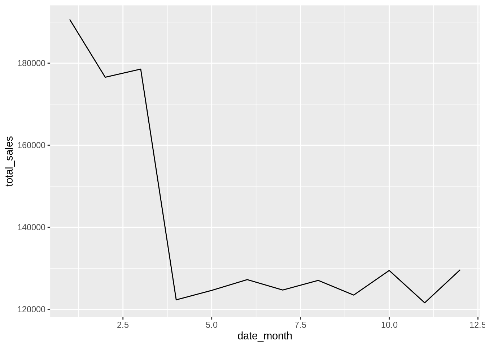

2 Introduction to dtplyr
2.1 dtplyr basics
Load data into R via data.table, and then wrap it with dtplyr
Load the
data.table,purrrandfslibrariesRead the transactions.csv file, from the files folder. Use the
fread()function to load the data into a variable calledtransactionsPreview the data using
str()## Classes 'data.table' and 'data.frame': 250000 obs. of 14 variables: ## $ order_id : int 1001 1001 1002 1002 1002 1002 1003 1003 1003 1003 ... ## $ customer_id : int 36 36 21 21 21 21 64 64 64 64 ... ## $ customer_name : chr "Jeptha Ziemann" "Jeptha Ziemann" "Miss Azzie Jaskolski" "Miss Azzie Jaskolski" ... ## $ customer_phone : chr "670.093.2858" "670.093.2858" "(634)363-1830x7533" "(634)363-1830x7533" ... ## $ customer_cc :integer64 869989038460747839 869989038460747839 6011469689707342998 6011469689707342998 6011469689707342998 6011469689707342998 6011829607227923753 6011829607227923753 ... ## $ customer_lon : num -122 -122 -122 -122 -122 ... ## $ customer_lat : num 37.7 37.7 37.8 37.8 37.8 ... ## $ date : chr "2016-01-01" "2016-01-01" "2016-01-01" "2016-01-01" ... ## $ date_year : int 2016 2016 2016 2016 2016 2016 2016 2016 2016 2016 ... ## $ date_month : int 1 1 1 1 1 1 1 1 1 1 ... ## $ date_month_name: chr "Jan" "Jan" "Jan" "Jan" ... ## $ date_day : chr "Friday" "Friday" "Friday" "Friday" ... ## $ product_id : int 25 25 6 14 25 29 7 8 20 22 ... ## $ price : num 5.47 5.47 9.88 8.05 5.47 5.95 5.65 6.5 8.34 5.09 ... ## - attr(*, ".internal.selfref")=<externalptr>Load the
dplyranddtplyrlibrariesUse the
lazy_dt()to “wrap” thetransactionsvariable, into a new variable calleddt_transactionsView the
dt_transactionsvariable’s structure withstr()## List of 7 ## $ parent :Classes 'data.table' and 'data.frame': 250000 obs. of 14 variables: ## ..$ order_id : int [1:250000] 1001 1001 1002 1002 1002 1002 1003 1003 1003 1003 ... ## ..$ customer_id : int [1:250000] 36 36 21 21 21 21 64 64 64 64 ... ## ..$ customer_name : chr [1:250000] "Jeptha Ziemann" "Jeptha Ziemann" "Miss Azzie Jaskolski" "Miss Azzie Jaskolski" ... ## ..$ customer_phone : chr [1:250000] "670.093.2858" "670.093.2858" "(634)363-1830x7533" "(634)363-1830x7533" ... ## ..$ customer_cc :integer64 [1:250000] 869989038460747839 869989038460747839 6011469689707342998 6011469689707342998 6011469689707342998 6011469689707342998 6011829607227923753 6011829607227923753 ... ## ..$ customer_lon : num [1:250000] -122 -122 -122 -122 -122 ... ## ..$ customer_lat : num [1:250000] 37.7 37.7 37.8 37.8 37.8 ... ## ..$ date : chr [1:250000] "2016-01-01" "2016-01-01" "2016-01-01" "2016-01-01" ... ## ..$ date_year : int [1:250000] 2016 2016 2016 2016 2016 2016 2016 2016 2016 2016 ... ## ..$ date_month : int [1:250000] 1 1 1 1 1 1 1 1 1 1 ... ## ..$ date_month_name: chr [1:250000] "Jan" "Jan" "Jan" "Jan" ... ## ..$ date_day : chr [1:250000] "Friday" "Friday" "Friday" "Friday" ... ## ..$ product_id : int [1:250000] 25 25 6 14 25 29 7 8 20 22 ... ## ..$ price : num [1:250000] 5.47 5.47 9.88 8.05 5.47 5.95 5.65 6.5 8.34 5.09 ... ## ..- attr(*, ".internal.selfref")=<externalptr> ## $ vars : chr [1:14] "order_id" "customer_id" "customer_name" "customer_phone" ... ## $ groups : chr(0) ## $ implicit_copy: logi FALSE ## $ needs_copy : logi FALSE ## $ env :<environment: R_GlobalEnv> ## $ name : symbol _DT1 ## - attr(*, "class")= chr [1:2] "dtplyr_step_first" "dtplyr_step"
2.2 Object sizes
Confirm that dtplyr is not making copies of the original data.table
Load the
lobstrlibraryUse
obj_size()to obtaintransactions’s size in memory## 23,069,208 BUse
obj_size()to obtaindt_transactions’s size in memory## 23,070,320 BUse
obj_size()to obtaindt_transactionsandtransactionssize in memory together## 23,070,320 B
2.3 How dtplyr works
Under the hood view of how dtplyr operates data.table objects
Use
dplyrverbs on top ofdt_transactionsto obtain the total sales by month## Source: local data table [?? x 2] ## Call: `_DT1`[, .(total_sales = sum(price)), keyby = .(date_month)] ## ## date_month total_sales ## <int> <dbl> ## 1 1 190662. ## 2 2 176576. ## 3 3 178563. ## 4 4 122322. ## 5 5 124623. ## 6 6 127250. ## ## # Use as.data.table()/as.data.frame()/as_tibble() to access resultsLoad the above code into a variable called
by_monthUse
show_query()to see thedata.tablecode thatby_monthactually runs## `_DT1`[, .(total_sales = sum(price)), keyby = .(date_month)]Use
str()to view howby_month, instead of modifying the data, it only adds steps that will later be operated bydata.table## List of 6 ## $ parent :List of 9 ## ..$ parent :List of 6 ## .. ..$ parent :List of 7 ## .. .. ..$ parent :Classes 'data.table' and 'data.frame': 250000 obs. of 14 variables: ## .. .. .. ..$ order_id : int [1:250000] 1001 1001 1002 1002 1002 1002 1003 1003 1003 1003 ... ## .. .. .. ..$ customer_id : int [1:250000] 36 36 21 21 21 21 64 64 64 64 ... ## .. .. .. ..$ customer_name : chr [1:250000] "Jeptha Ziemann" "Jeptha Ziemann" "Miss Azzie Jaskolski" "Miss Azzie Jaskolski" ... ## .. .. .. ..$ customer_phone : chr [1:250000] "670.093.2858" "670.093.2858" "(634)363-1830x7533" "(634)363-1830x7533" ... ## .. .. .. ..$ customer_cc :integer64 [1:250000] 869989038460747839 869989038460747839 6011469689707342998 6011469689707342998 6011469689707342998 6011469689707342998 6011829607227923753 6011829607227923753 ... ## .. .. .. ..$ customer_lon : num [1:250000] -122 -122 -122 -122 -122 ... ## .. .. .. ..$ customer_lat : num [1:250000] 37.7 37.7 37.8 37.8 37.8 ... ## .. .. .. ..$ date : chr [1:250000] "2016-01-01" "2016-01-01" "2016-01-01" "2016-01-01" ... ## .. .. .. ..$ date_year : int [1:250000] 2016 2016 2016 2016 2016 2016 2016 2016 2016 2016 ... ## .. .. .. ..$ date_month : int [1:250000] 1 1 1 1 1 1 1 1 1 1 ... ## .. .. .. ..$ date_month_name: chr [1:250000] "Jan" "Jan" "Jan" "Jan" ... ## .. .. .. ..$ date_day : chr [1:250000] "Friday" "Friday" "Friday" "Friday" ... ## .. .. .. ..$ product_id : int [1:250000] 25 25 6 14 25 29 7 8 20 22 ... ## .. .. .. ..$ price : num [1:250000] 5.47 5.47 9.88 8.05 5.47 5.95 5.65 6.5 8.34 5.09 ... ## .. .. .. ..- attr(*, ".internal.selfref")=<externalptr> ## .. .. ..$ vars : chr [1:14] "order_id" "customer_id" "customer_name" "customer_phone" ... ## .. .. ..$ groups : chr(0) ## .. .. ..$ implicit_copy: logi FALSE ## .. .. ..$ needs_copy : logi FALSE ## .. .. ..$ env :<environment: R_GlobalEnv> ## .. .. ..$ name : symbol _DT1 ## .. .. ..- attr(*, "class")= chr [1:2] "dtplyr_step_first" "dtplyr_step" ## .. ..$ vars : chr [1:14] "order_id" "customer_id" "customer_name" "customer_phone" ... ## .. ..$ groups : chr "date_month" ## .. ..$ implicit_copy: logi FALSE ## .. ..$ needs_copy : logi FALSE ## .. ..$ env :<environment: R_GlobalEnv> ## .. ..- attr(*, "class")= chr [1:2] "dtplyr_step_group" "dtplyr_step" ## ..$ vars : chr [1:2] "date_month" "total_sales" ## ..$ groups : chr "date_month" ## ..$ implicit_copy: logi TRUE ## ..$ needs_copy : logi FALSE ## ..$ env :<environment: R_GlobalEnv> ## ..$ i : NULL ## ..$ j : language .(total_sales = sum(price)) ## ..$ on : chr(0) ## ..- attr(*, "class")= chr [1:2] "dtplyr_step_subset" "dtplyr_step" ## $ vars : chr [1:2] "date_month" "total_sales" ## $ groups : chr(0) ## $ implicit_copy: logi TRUE ## $ needs_copy : logi FALSE ## $ env :<environment: R_GlobalEnv> ## - attr(*, "class")= chr [1:2] "dtplyr_step_group" "dtplyr_step"
2.4 Working with dtplyr
Learn data conversion and basic visualization techniques
Use
as_tibble()to convert the results ofby_monthinto atibble## # A tibble: 12 x 2 ## date_month total_sales ## <int> <dbl> ## 1 1 190662. ## 2 2 176576. ## 3 3 178563. ## 4 4 122322. ## 5 5 124623. ## 6 6 127250. ## 7 7 124709. ## 8 8 127061. ## 9 9 123480. ## 10 10 129477. ## 11 11 121596. ## 12 12 129657.Load the
ggplot2libraryUse
as_tibble()to convert before creating a line plot
2.5 Pivot data
Review a simple way to aggregate data faster, and then pivot it as a tibble
Load the
tidyrlibraryGroup
db_transactionsbydate_monthanddate_day, then aggregatepriceintototal_sales## Source: local data table [?? x 3] ## Call: `_DT1`[, .(total_sales = sum(price)), keyby = .(date_month, date_day)] ## ## date_month date_day total_sales ## <int> <chr> <dbl> ## 1 1 Friday 26794. ## 2 1 Monday 27979. ## 3 1 Saturday 28784. ## 4 1 Sunday 28845. ## 5 1 Thursday 23130. ## 6 1 Tuesday 27982. ## ## # Use as.data.table()/as.data.frame()/as_tibble() to access resultsCopy the aggregation code above, then collect it into a
tibble, and then usepivot_wider()to make thedate_daythe column headers.dt_transactions %>% group_by(date_month, date_day) %>% summarise(total_sales = sum(price)) %>% as_tibble() %>% pivot_wider(names_from = date_day, values_from = total_sales)## # A tibble: 12 x 8 ## date_month Friday Monday Saturday Sunday Thursday Tuesday Wednesday ## <int> <dbl> <dbl> <dbl> <dbl> <dbl> <dbl> <dbl> ## 1 1 26794. 27979. 28784. 28845. 23130. 27982. 27148. ## 2 2 25563. 29165. 24096. 23912. 26444. 24098. 23299. ## 3 3 27397. 22200. 24656. 23597. 29247. 25391. 26074. ## 4 4 19018. 16856. 20020. 18899. 15820. 15464. 16246. ## 5 5 16041. 20272. 15213. 17462. 15842. 21911. 17882. ## 6 6 19265. 15604. 17439. 16459. 20383. 17516. 20582. ## 7 7 19046. 18848. 18914. 19808. 16089. 15179. 16825. ## 8 8 15997. 18127. 15788. 16653. 18651. 20516. 21329. ## 9 9 21518. 17148. 17977. 15869. 18397. 16733. 15838. ## 10 10 16034. 19202. 18308. 21106. 17453. 18968. 18406. ## 11 11 15873. 15581. 16836. 16673. 19718. 17894. 19021. ## 12 12 21329. 17214. 19855. 18481. 18616. 16098. 18064.
2.6 The mutate() verb
See how dtplyr creates a copy of the original data.table object in order to make the mutate operation work the same as it does on dtplr
Use
mutate()andshow_query()to see thecopy()command being used## copy(`_DT1`)[, `:=`(new_field = price/2)]Use
lazy_dt()with theimmutableargument set toFALSEto avoid the copy## `_DT2`[, `:=`(new_field = price/2)]